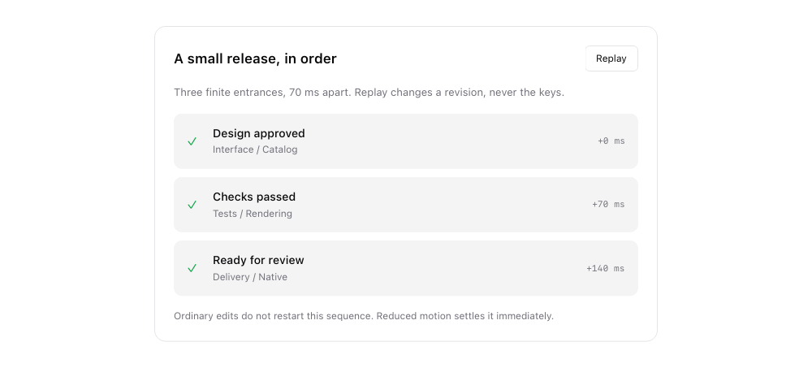
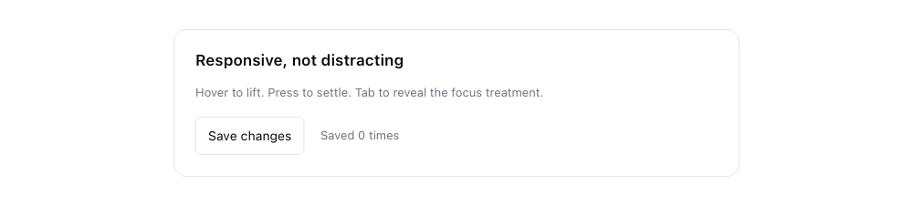

Components
Effects & motion
The examples below come from the native Catalog. Preview images are rendered by the toolkit, not recreated in HTML. They do not demonstrate native input or desktop blur.
Motion that explains a change
01 / 06Compare smooth, spring and instant timing. Reverse the task while it moves; hit targets, focus and layout never follow decorative paint offsets.

How to use Rust source
panel![task_content(app)].key("task")
.offset(if app.ready { 64. } else { 0. }, 0.)
.animation(Animation::spring().duration_ms(520));
// Or tune the response without adding a timer:
// Animation::spring_with(Spring::new().damping_ratio(0.7))
// Retargeting preserves painted position, not physical velocity.Catalog excerpt: names such as app, callbacks and helper functions belong to the example. View the complete source or start with the runnable app guide.
A sequence, not a loop
02 / 06Stagger related updates and replay an entrance explicitly. When the last item settles, this preview stops requesting animation frames.


How to use Rust source
row.key(format!("step-{index}"))
.transition(Transition::slide(0., 10.)
.animation(Animation::ease_out().duration_ms(320))
.stagger(index, 70))
.transition_revision(app.replay_revision);
// Replay button: app.replay_revision = app.replay_revision.wrapping_add(1);
// Unchanged revision keeps the current transition's clock.Catalog excerpt: names such as app, callbacks and helper functions belong to the example. View the complete source or start with the runnable app guide.
Tactile state feedback
03 / 06A restrained glow and two-pixel lift. Press and hover can interrupt one another; the callback runs only when the button activates.


How to use Rust source
button("Save changes").key("save")
.hover_style(|s| s.offset(0., -2.)
.glow(Glow::new().color(ColorToken::Primary.alpha(25)).blur(12.)))
.pressed_style(|s| s.offset(0., 1.).opacity(0.8))
.animate_on(Interaction::Hover, Animation::spring().duration_ms(280))
.animate_on(Interaction::Pressed, Animation::ease_out().duration_ms(90))
.on_click(save_changes);Catalog excerpt: names such as app, callbacks and helper functions belong to the example. View the complete source or start with the runnable app guide.
Elevation
04 / 06Analytic shadows on the GPU, blurred masks in software.

How to use Rust source
.shadow(Shadow::new().color("#00000022").blur(18.).offset(0., 6.))Catalog excerpt: names such as app, callbacks and helper functions belong to the example. View the complete source or start with the runnable app guide.
Interaction states
05 / 06Hover, press and focus styles with their own easing.

How to use Rust source
button("Hover for glow")
.hover_style(|s| s.glow(Glow::new().color(ColorToken::Primary.alpha(60)).blur(14.)))
.animate_on(Interaction::Hover, Animation::ease_out().duration_ms(180))Catalog excerpt: names such as app, callbacks and helper functions belong to the example. View the complete source or start with the runnable app guide.
Transitions
06 / 06Keyed elements fade when they appear and leave; reduced motion settles instantly.

How to use Rust source
if app.reveal {
message.key("message").transition(Transition::fade().duration_ms(260))
}Catalog excerpt: names such as app, callbacks and helper functions belong to the example. View the complete source or start with the runnable app guide.
Try it in the native Catalog
From the repository root. Static snapshots cannot demonstrate editing, keyboard focus, scrolling or animation.
cargo run --release --locked \
--features native-gpu,native-desktop \
--example catalog -- --page effects-motionAPI reference
Properties and behavior documented by this Catalog page.
| API | Behavior |
|---|---|
Animation::spring() / spring_with(Spring) | Finite damped response; positional overshoot, bounded colors/opacity |
.stagger(index, interval_ms) | Adds per-item delay; overflow is rejected during build |
.transition_revision(revision) | Replay an entrance without remounting or changing keys |
.shadow(Shadow) / .glow(Glow) / .opacity(o) | Paint-only effects. |
.hover_style / .pressed_style / .focus_style | Style patches per interaction. |
.animate_on(Interaction, Animation) | Easing for state changes. |
.animation(Animation) | Animate appearance changes for the same key. |
.transition(Transition::fade()) | Fade on enter and exit. |